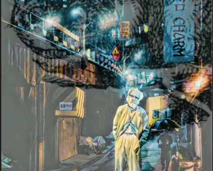

The Cheshire Diagrams
Gregory Ulmer

“Cheshire Diagrams” is an experiment in conduction-- a mode of inference introduced in electracy, supported by digital technologies and vanguard poetics, to supplement the inferential procedures of abduction, deduction, and induction created within literacy. The Diagrams are posted on konsultexperiment.com, a site devoted to the invention of education designed for electracy (the apparatus of digital civilization). The immediate goal of KE is to promote a transition from literate school into natively electrate practices. Primary partners for this collaboration are colleagues engaged in developing Humanities curriculum and pedagogy addressing learning through digital media. KE approaches this project in terms of heuretics (the logic of invention). We do not assume that we know in advance the coming electrate education. We do know how it may be invented. The first step in transforming learning from literacy to electracy is to reimagine Arts and Letters curriculum as resources for creativity, not only within the Humanities disciplines, but across the curriculum. Literacy remains relevant to all disciplines in this framing to the extent that writing and its related powers of reason and argument are a dimension of all learning. Electracy is similarly relevant to the extent that creativity is practiced as pedagogy across the curriculum.
KE’s point of departure is the theory and practice of education Gregory L. Ulmer developed in a series of books and articles, beginning with the publication of Applied Grammatology (1985), including his collaboration with colleagues in the Florida Research Ensemble (FRE). The preliminary phase of KE invention involved a synthesis, update, translation, and remake of these publications into exercises, assignments, projects (textshop pedagogy). The point of departure of the blog http://konsultexperiment.com/is the book, Konsult: Theopraxesis, published in Parlor Press Electracy and Transmedia Studies series (2019). This book develops the Theory register of the generative CATTt guiding KE. A basic heuristic is to invent electracy by analogy with the invention of literacy in Plato’s Academy in Classical Athens. In brief: Konsult is to electracy what Plato’s dialogue is to literacy. Plato’s dialogue performed an interface event in which illiterate students encountered literacy, undergoing a transition from conversation to dialectic. Konsult similarly performs a transition from scientific consulting to conduction.
About the Author
Gregory L. Ulmer
Gregory L. Ulmer is Professor Emeritus, English and Media Studies, University of Florida. He is coordinator of the Florida Research Ensemble (FRE) (see Miami Virtue, https://www.academia.edu/1352468/Miami_Virtue_Choragraphy_of_the_Virtual_City), and Joseph Beuys Chair at the European Graduate School, Saas Fee, Switzerland (2000-2009). His most recent books are Avatar Emergency (2012), Electracy (2015), and Konsult: Theopraxesis (2019). Ulmer's current project is a creative collaboration, Konsult Experiment (http://konsultexperiment.com/) hosted by the Electracy and Transmedia Studies series (Parlor Press), developing a pedagogy native to the digital apparatus. (CV http://users.clas.ufl.edu/glue/vita.html)